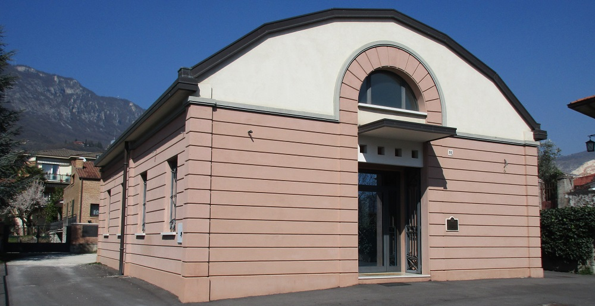

{%- if page.title -%}
{{ page.title }}
{%- endif -%}
{{ content }}
Lo Studio

Lo studio di progettazione nasce nel 1981.
Da allora si occupa di progettazione e realizzazione di opere di edilizia
civile ed industriale, con committenti privati e pubblici.
Lo studio segue, con competenza, ogni fase di realizzazione di un'opera:
progettazione architettonica, strutturale, impiantistica, direzione dei
lavori e coordinamento della sicurezza.
Nella sua attività, si è occupato della progettazione e realizzazione di
complessi residenziali, ville, edifici industriali, uffici, complessi
polifunzionali, edilizia scolastica, strade ed opere di urbanizzazione. Un
importante settore dell'attività è dato dal restauro e consolidamento di
edifici storici e monumentali, tra i quali chiese e campanili.
In campo strutturale, ha maturato una particolare esperienza
nella progettazione antisismica di opere in cemento armato e muratura,
nella verifica del livello di sicurezza e nel consolidamento di edifici ed
infrastrutture di importanza rilevante e strategica, ivi compresi musei,
edifici di culto e sbarramenti fluviali.
Nell'industria, ha realizzato fondazioni di macchine utensili di grandi
dimensioni, garantendo piccolissime deformazioni sotto carico per
consentire lavorazioni di precisione (centri di lavoro, alesatrici, fresatrici,
torni), fosse per cabine di verniciatura e pavimentazioni industriali in
calcestruzzo soggette a carichi straordinari.
Lo studio ha approfondito alcuni campi della tradizionale attività
sviluppatisi in tempi recenti, occupandosi di progettazione e realizzazione
di "edifici ad energia quasi zero(NZEB)".